FENÊTRE
Le compteur complet
Tous les chiffres, les grades et les boutons pour corriger : −1, +1, annuler le dernier kill.
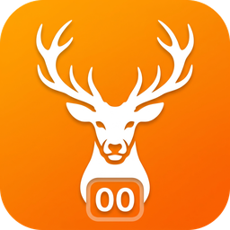
theHunter: Call of the Wild · PC
KillFarm Lite suit chaque bête que tu ramasses, range ses grades et te dit combien de kills t'a coûté ton dernier Great One. Par-dessus le jeu, sur tes vidéos TikTok et en live.
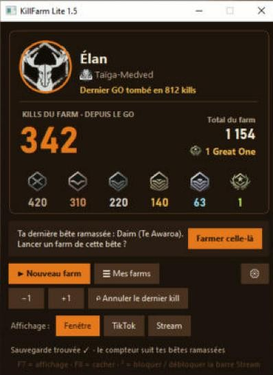
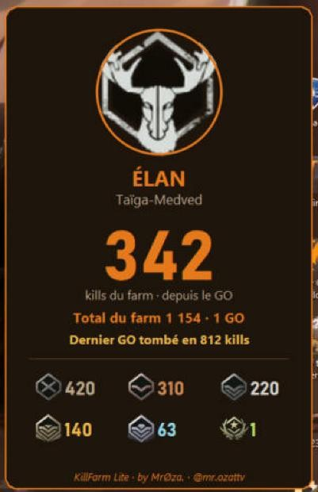
Captures réelles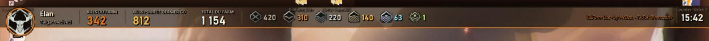
La barre Stream, transparente : on voit le jeu à travers, les chiffres restent nets.
Ce que tu vois d'un coup d'œil
Le compteur qui monte à chaque bête ramassée et repart de 0 quand le Great One tombe.
Combien il t'a fallu pour ton dernier Great One. Le chiffre à montrer.
Tous tes kills depuis le lancement du farm, avec les 6 grades : sans médaille, bronze, argent, or, diamant, Great One.
3 affichages · touche F7 pour passer de l'un à l'autre
Tous les chiffres, les grades et les boutons pour corriger : −1, +1, annuler le dernier kill.
Une carte verticale à glisser où tu veux sur l'écran, en 3 tailles. À capturer dans OBS ou à filmer avec ta partie.
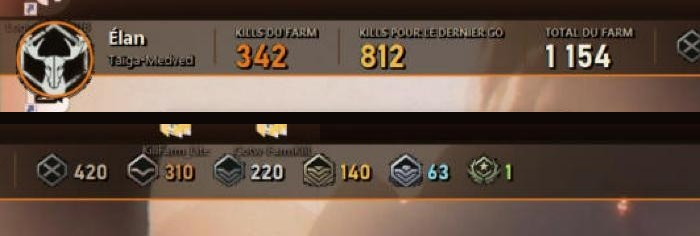
En bas, en haut ou sous la barre du jeu, avec la transparence que tu veux. La souris passe à travers : tu joues sans cliquer dessus.
Touches et menus
Les 3 touches marchent même quand tu es dans le jeu. Le reste se fait avec 2 menus et un clic droit.
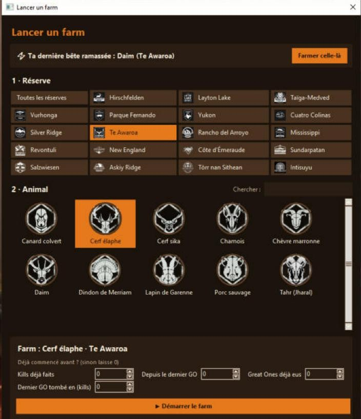
19 réserves · 127 bêtes · français et anglais
4 couleurs
La couleur change la fenêtre, la carte TikTok et la barre Stream en même temps.
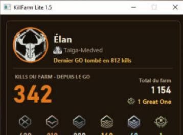
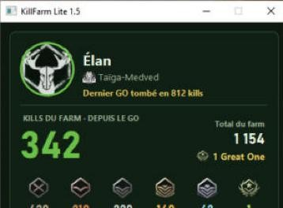
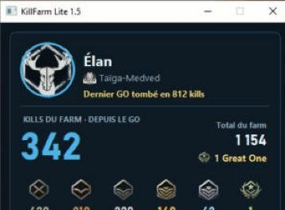
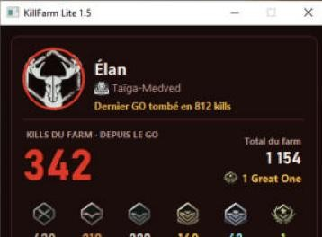
KillFarm Mobile · aussi sur Android
Un gros bouton « +1 KILL », tes Great One, et en quelques secondes une photo ou un clip TikTok avec ta carte de farm posée sur ta capture du jeu.
Gratuit. Ouvre le lien depuis ton téléphone, de préférence dans Chrome. Android te demandera d'autoriser l'installation « source inconnue » : c'est normal hors Play Store.
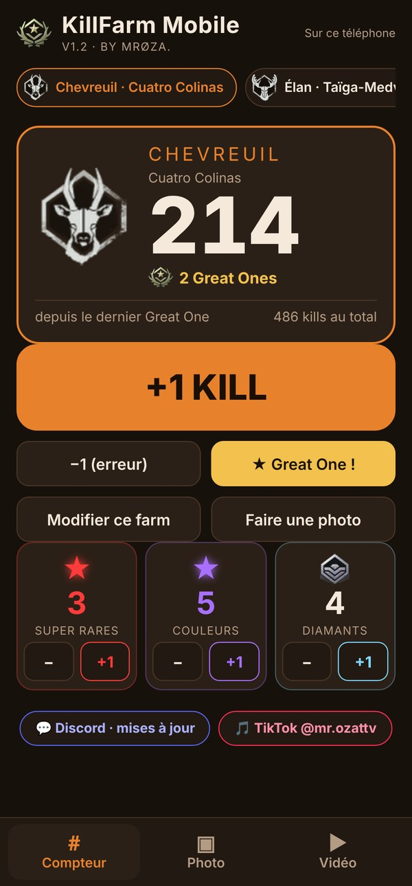
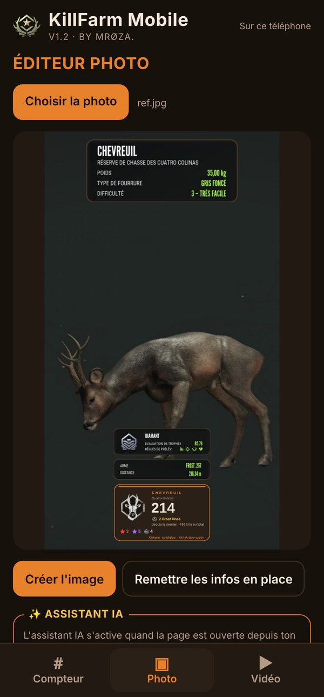
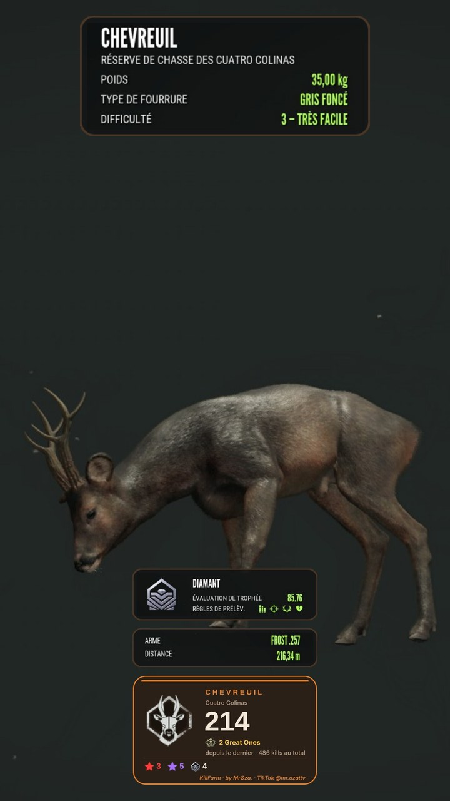
Installation
Non. L'appli lit seulement ta sauvegarde pour voir les bêtes ramassées. Elle n'écrit jamais rien dans le jeu.
Non, l'appli la trouve toute seule (Documents › Avalanche Studios › COTW › Saves). Seulement si tu l'as déplacée : ⚙ › Dossier de sauvegarde du jeu.
Oui, français et anglais. Elle prend la langue de ton Windows. Pour changer : ⚙ › Language / Langue.
Non, juste le fichier KillFarm Lite.exe. Tes farms sont gardés dans Documents\KillFarm_Lite, même quand tu mets l'appli à jour.
C'est normal pour une petite appli gratuite non signée. Regarde l'encadré « Windows bloque l'appli ? » juste en dessous : 2 cas, 2 solutions.
L'appli te demande laquelle c'était, la compte et s'en souvient pour les suivantes.
KillFarm Lite is fully in English. It counts every animal you harvest on your Great One farm, with its grade, and shows it in a window, a TikTok card or a see-through Stream bar.
Your game save is found automatically: unzip, double-click KillFarm Lite.exe, play. The app only reads your save and never changes the game. English instructions in README.txt.
Download for PC (free)KillFarm Lite est une petite appli gratuite, pas signée par une grosse société : Windows se méfie par défaut. Regarde quel message tu as :
C'est tout : Windows ne le redemandera plus.
Toujours bloqué ? Ton Windows refuse toutes les applis non signées. Tu peux utiliser l'appli Android. Besoin d'aide : le Discord.
Mises à jour, aide et idées : tout se passe sur le Discord.